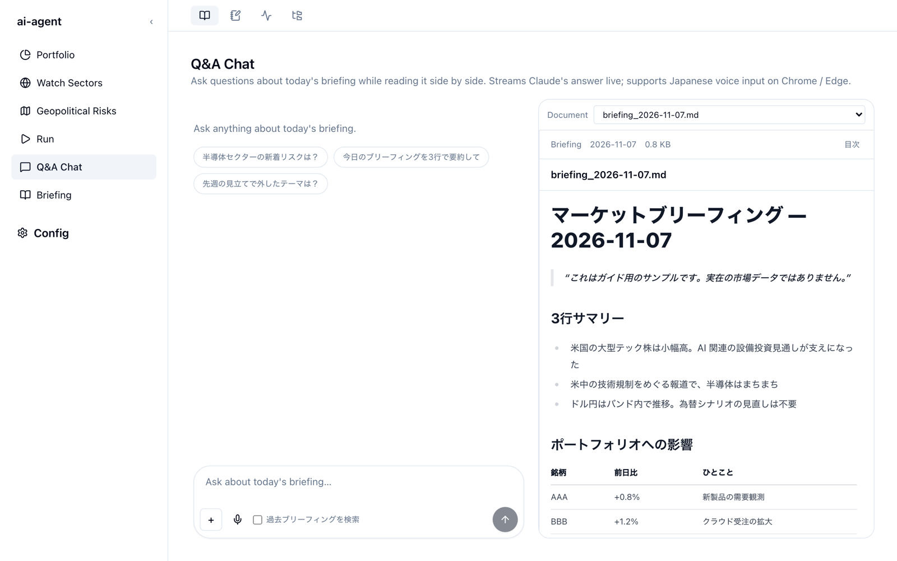

質問する（Q&A Chat）
Q&A Chat では、ブリーフィングの本文を右に表示したまま、左のチャットで Claude に質問できます。回答は届いた分から順に表示されます。「この銘柄への影響をもう少し詳しく」のように、読みながら掘り下げるための画面です。

質問する
- 右上の Document で、質問の対象にするブリーフィングを選びます。最初は最新のものが選ばれています。
- 下の入力欄（Ask about today's briefing…）に質問を書いて、送信ボタン（↑）を押します。入力欄の上に並ぶ候補を押すと、その質問をそのまま入力できます。
- 回答が届き始めます。続けて質問すると、同じ会話の続きとして扱われます。
回答を途中で止めたいときは Esc を押します。
入力欄のボタン
| ボタン | 動き |
|---|---|
| + | 画像を添付します。チャートのスクリーンショットなどを見せて質問できます。入力欄へのドラッグ＆ドロップや貼り付けでも添付できます |
| マイク | 音声で入力します（日本語。Chrome / Edge で使えます） |
| 過去ブリーフィングを検索 | 選んでいる日付だけでなく、過去のブリーフィング全体から関連する部分を探して回答に使います。下の注意を参照してください |
過去ブリーフィングの検索にはローカル LLM が必要です。
この機能は、Ollama と Chroma で作った過去ブリーフィングの索引を使います。ローカル LLM モードを用意していない環境でチェックを入れると、検索が使えないというエラーになります。セットアップはリポジトリの local-llm.md を参照してください。
回答を Notion に追記する
Notion の認証情報（NOTION_API_KEY と NOTION_DATABASE_ID）を登録していると、回答が届き終わるたびに、その日の Notion のブリーフィングページへ自動で追記されます。各回答の下にあるボタンの表示で状態が分かります。
| 表示 | 状態 |
|---|---|
| Notion ブリーフィングに追記 | まだ追記していません。押すと追記します |
| 追記中… | 追記しています |
| ✓ Notion に追記済 | 追記できました。ページを開く で Notion のページを開けます |
| 追記を再試行 | 失敗しました。押すともう一度試します |
Notion への追記と同時に、ローカルの briefing_YYYY-MM-DD.md にも質問と回答が追記されます（ローカル md にも追記済 と表示されます）。
Notion への追記は Claude Code のスキルで行います。
追記は、Claude Code に入っている
/notion-import スキルを呼び出して行います。スキルが入っていない環境では、ローカルの Markdown への追記だけが行われます。追記のときに Claude に許可するのは、ファイルの読み書きと Notion の検索・ページ作成・ページ更新だけです。
ターミナルで質問する
リポジトリを clone した環境では、ターミナルから同じように質問できます。
bin/chat.sh # 当日のブリーフィングで新規に始めるか、続きから再開する
bin/chat.sh 2026-05-16 # 過去の特定の日のブリーフィングで質問する
bin/chat.sh --list # 保存されているセッションの一覧